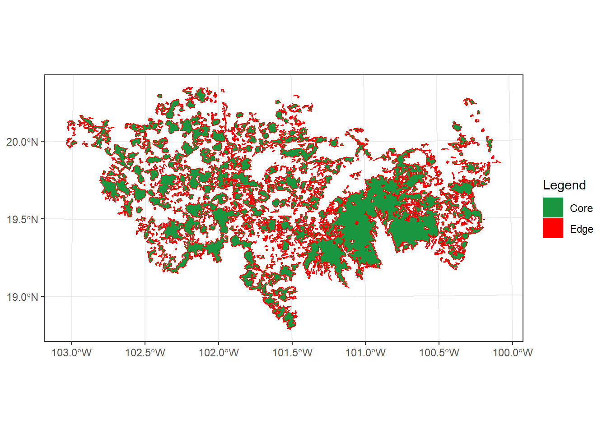
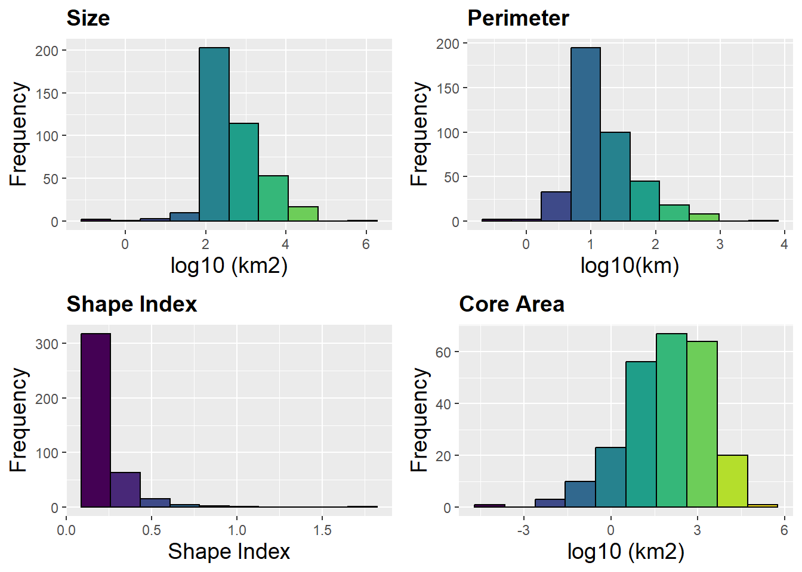
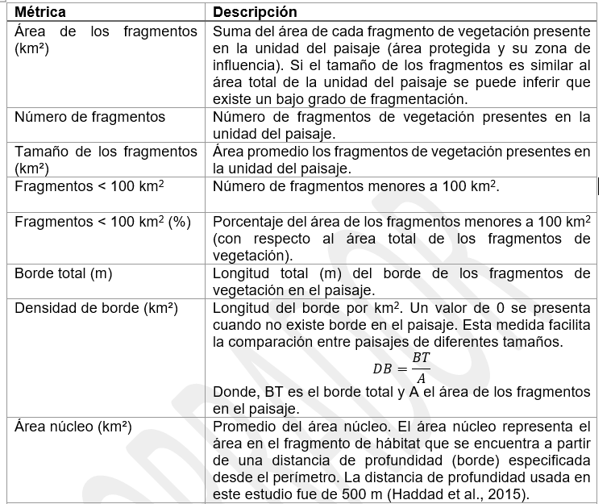
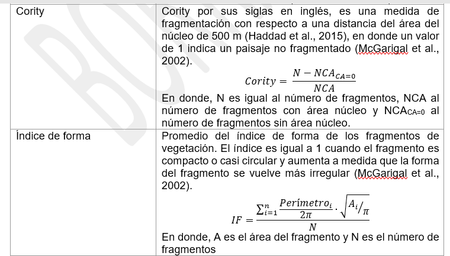
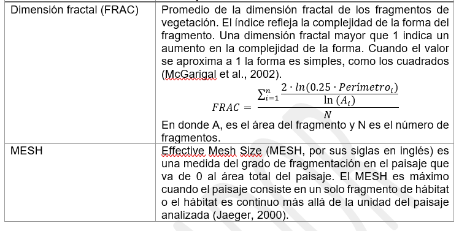

2 Estadísticas de fragmentación del paisaje
Exploraremos la función MK_Fragmentation() para caracterizar la composición y la configuración espacial de los parches en nuestro paisaje.
La función calcula ocho métricas a nivel de nodo (como el área de nodo, el porcentaje de borde y la dimensión fractal) y 13 estadísticas de fragmentación a nivel de paisaje (como el número de nodos, el tamaño medio, la densidad de borde y el tamaño efectivo de la malla).
Las entradas incluyen un objeto vectorial que representa los nodos del paisaje y un parámetro que define la distancia o profundidad de la influencia del borde (es decir, la distancia al borde del nodo).
Los resultados consisten en un archivo vectorial tipo poligonal que contiene métricas a nivel de nodo y una tabla que detalla las métricas a nivel de paisaje.
2.1 Inputs
Usaremos la librerias sf, para trabajar con un shapefile que contiene 404 parches de vegetación con la menor alteración o signos de degradación en un estado de México llamado Michoacán. Tambien cargaremos el paisaje de estudio donde se encuentran los parches y que fue delimitado usando el limite politico del estado y la región fisiográfica denominada Eje Neovolcánico.
El shapefile lo pueden encontrar en la siguiente carpeta del drive:
https://drive.google.com/drive/folders/1yJcxk2JsEfVjqBx7QM6SV5sIbq7YD1iX?usp=sharing
#> Cargando paquete requerido: igraph
#>
#> Adjuntando el paquete: 'igraph'
#> The following objects are masked from 'package:stats':
#>
#> decompose, spectrum
#> The following object is masked from 'package:base':
#>
#> union
#> Cargando paquete requerido: cppRouting
#> Linking to GEOS 3.13.0, GDAL 3.10.1, PROJ 9.5.1;
#> sf_use_s2() is TRUE
#> [1] 404
library(Makurhini)
library(sf)
habitat_nodes <- read_sf("C:/Users/habitat_nodes.shp")
nrow(habitat_nodes)
paisaje <- read_sf("C:/Users/paisaje.shp")Para gráficarlo necesitamos ggplot2, favor de instalarlo si no lo tiene entre sus paquetes.
install.packages("ggplot2"), dependencies = TRUE)
install.packages("RColorBrewer"), dependencies = TRUE)
library(ggplot2)
library(RColorBrewer)
ggplot() +
geom_sf(data = paisaje, aes(color = "Study area"), fill = NA, color = "black") +
geom_sf(data = habitat_nodes, aes(color = "Parches"), fill = "forestgreen", linewidth = 0.5) +
scale_color_manual(name = "", values = "black")+
theme_minimal() +
theme(axis.title.x = element_blank(),
axis.title.y = element_blank())
En caso de necesitar abrir otro vector (e.g., .shp, .gpkg) necesitan usar la fución read_sf() del paquete sf, la función shapefile() del paquete raster, o la funcion vect() del paquete terra.
Para abrirlo solo necesitan colocar la dirección de su archivo, el nombre y la extensión, ejemplo:
vegetation_patches <- sf::read_sf("D:/Datos/vegetation_patches.shp")vegetation_patches <- raster::shapefile("D:/Datos/vegetation_patches.shp")vegetation_patches <- terra::vect("D:/Datos/vegetation_patches.shp")
Para definir el borde usaremos una distancia de 500 m a partir del límite de los parches (Haddad et al. 2015).
2.2 Funcion
MK_Fragmentation(
nodes = NULL,
edge_distance = 500,
min_node_area = 100,
landscape_area = NULL,
area_unit = "ha",
perimeter_unit = "km",
plot = FALSE,
write = NULL
)Los argumento de la función que usaremos son:
- nodes = objeto con los parches,
- edge_distance = profundidad del efecto de borde.
- min_node_area = Área mínima del nodo utilizada para calcular el número de nodos con un área menor a la proporcionada. Por defecto igual a 100 km² (Haddad et al. 2015).
- landscape_area = Área total del paisaje de estudio (opcional). Si se deja como NULL, se utilizará el área total de los nodos. La unidad de área debe ser igual a la seleccionada en el párametro area_unit.
- area_unit = Puedes establecer una unidad de área (por ejemplo, “km2”, “cm2”, “m2”, “ha”; ver unit_convert). Por defecto es kilómetros cuadrados “km2”.
- perimeter_unit = Puedes establecer una unidad de perímetro (por ejemplo, “km”, “cm”, “m”, “ha”; ver unit_convert). Por defecto es kilómetros “km”.
- plot = Genera histogramas básicos y un mapa de área núcleo - borde.
- write = Guarda la tabla (estadísticas del paisaje), el objeto sf (estadísticas de parches/nodos) y las gráficas. Es necesario especificar la ruta y el prefijo. Por ejemplo, para guardar en la ruta “C:/Folder” con el prefijo “Fragmentation”: “C:/Folder/Fragmentation”
2.3 Ejercicio 1
Estimamos el área del paisaje de estudio.
area_paisaje <- st_area(paisaje)
area_paisaje <- unit_convert(area_paisaje, "m2", "ha") Aplicamos la función.
Fragmentacion <- MK_Fragmentation(nodes = habitat_nodes,
edge_distance = 500,
min_node_area = 100,
landscape_area = area_paisaje,
area_unit = "ha",
perimeter_unit = "km",
plot = TRUE)
2.3.1 Estadisticos a nivel de parche
El primer resultado “Patch statistics shapefile” es un shapefile con estadísticos de fragmentación a nivel de parche.
Fragmentacion$`Patch statistics shapefile`
#> Simple feature collection with 404 features and 9 fields
#> Geometry type: POLYGON
#> Dimension: XY
#> Bounding box: xmin: -108954 ymin: 2025032 xmax: 202330.2 ymax: 2198936
#> Projected CRS: NAD_1927_Albers
#> First 10 features:
#> Id Area CA CAPercent Perimeter EdgePercent
#> 1 1 85.8368 0.000 0.0000 5.989 100.0000
#> 2 2 220.2168 0.000 0.0000 11.346 100.0000
#> 3 3 11019.9668 5337.795 48.4375 184.969 51.5625
#> 4 4 121.0018 0.000 0.0000 6.974 100.0000
#> 5 5 184.7226 0.000 0.0000 14.452 100.0000
#> 6 6 26.3052 0.000 0.0000 4.685 100.0000
#> 7 7 43.4931 0.000 0.0000 6.066 100.0000
#> 8 8 57.5414 0.000 0.0000 8.119 100.0000
#> 9 9 203.4670 0.000 0.0000 14.309 100.0000
#> 10 10 29440.4346 12326.275 41.8685 444.203 58.1315
#> PARA ShapeIndex FRAC geometry
#> 1 14.3324 0.1824 0.8040 POLYGON ((54911.05 2035815,...
#> 2 19.4092 0.2157 0.9005 POLYGON ((44591.28 2042209,...
#> 3 59.5774 0.4971 1.1217 POLYGON ((46491.11 2042467,...
#> 4 17.3504 0.1788 0.8100 POLYGON ((54944.49 2048163,...
#> 5 12.7818 0.3000 1.0235 POLYGON ((80094.28 2064140,...
#> 6 5.6148 0.2577 0.9446 POLYGON ((69205.24 2066394,...
#> 7 7.1700 0.2595 0.9557 POLYGON ((68554.2 2066632, ...
#> 8 7.0873 0.3019 1.0335 POLYGON ((69995.53 2066880,...
#> 9 14.2195 0.2830 1.0012 POLYGON ((79368.68 2067324,...
#> 10 66.2770 0.7303 1.1849 POLYGON ((23378.32 2067554,...Son espacialmente explicitos y podemos visualizarlos con librerias como ggplot2
- % de área núcleo:
ggplot() +
geom_sf(data = paisaje, aes(color = "Study area"), fill = NA, color = "black") +
geom_sf(data = Fragmentacion$`Patch statistics shapefile`, aes(fill = CAPercent), color = "black", size = 0.1) +
scale_fill_distiller(
palette = "RdYlGn",
direction = 1,
name = "% Área Núcleo"
) +
theme_minimal() +
labs(
title = "Fragmentación a nivel de parche",
fill = "% Área Núcleo"
) +
theme(
legend.position = "right",
plot.title = element_text(hjust = 0.5)
)- % de borde
ggplot() +
geom_sf(data = paisaje, aes(color = "Study area"), fill = NA, color = "black") +
geom_sf(data = Fragmentacion$`Patch statistics shapefile`, aes(fill = EdgePercent), color = "black", size = 0.1) +
scale_fill_distiller(
palette = "RdYlGn",
direction = -1,
name = "% Borde"
) +
theme_minimal() +
labs(
title = "Fragmentación a nivel de parche",
fill = "% Borde"
) +
theme(
legend.position = "right",
plot.title = element_text(hjust = 0.5)
)- Perimeter
ggplot() +
geom_sf(data = paisaje, aes(color = "Study area"), fill = NA, color = "black") +
geom_sf(data = Fragmentacion$`Patch statistics shapefile`, aes(fill = Perimeter), color = "black", size = 0.1) +
scale_fill_distiller(
palette = "RdYlGn",
direction = -1,
name = "Perímetro"
) +
theme_minimal() +
labs(
title = "Fragmentación a nivel de parche",
fill = "Perímetro"
) +
theme(
legend.position = "right",
plot.title = element_text(hjust = 0.5)
)- Perimeter-Area Ratio
ggplot() +
geom_sf(data = paisaje, aes(color = "Study area"), fill = NA, color = "black") +
geom_sf(data = Fragmentacion$`Patch statistics shapefile`, aes(fill = PARA), color = "black", size = 0.1) +
scale_fill_distiller(
palette = "RdYlGn",
direction = -1,
name = "PARA"
) +
theme_minimal() +
labs(
title = "Fragmentación a nivel de parche",
fill = "PARA"
) +
theme(
legend.position = "right",
plot.title = element_text(hjust = 0.5)
)- Shape Index
ggplot() +
geom_sf(data = paisaje, aes(color = "Study area"), fill = NA, color = "black") +
geom_sf(data = Fragmentacion$`Patch statistics shapefile`, aes(fill = ShapeIndex), color = "black", size = 0.1) +
scale_fill_distiller(
palette = "PiYG",
direction = -1,
name = "Shape Index"
) +
theme_minimal() +
labs(
title = "Fragmentación a nivel de parche",
fill = "Shape Index"
) +
theme(
legend.position = "right",
plot.title = element_text(hjust = 0.5)
)- Fractal Dimension Index
ggplot() +
geom_sf(data = paisaje, aes(color = "Study area"), fill = NA, color = "black") +
geom_sf(data = Fragmentacion$`Patch statistics shapefile`, aes(fill = FRAC), color = "black", size = 0.1) +
scale_fill_distiller(
palette = "PiYG",
direction = -1,
name = "FRAC"
) +
theme_minimal() +
labs(
title = "Fragmentación a nivel de parche",
fill = "FRAC"
) +
theme(
legend.position = "right",
plot.title = element_text(hjust = 0.5)
)2.3.2 Estadísticos a nivel de paisaje
Los resultados se presentan a manera de una lista, el primer resultado se llama “Summary landscape metrics (Viewer Panel)” y tiene estadisticos de fragmentación a nivel de paisaje.
class(Fragmentacion)
#> [1] "list"
Fragmentacion$`Summary landscape metrics (Viewer Panel)`| Metric | Value |
|---|---|
| Patch area (ha) | 1273573.9249 |
| Number of patches | 404.0000 |
| Size (mean) | 3152.4107 |
| Patches < minimum patch area | 40.0000 |
| Patches < minimum patch area (%) | 0.1992 |
| Total edge | 17920.4740 |
| Edge density | 0.0141 |
| Patch density | 0.0146 |
| Total Core Area (ha) | 631595.3522 |
| Cority | 0.6064 |
| Shape Index (mean) | 0.2207 |
| FRAC (mean) | 0.8536 |
| MESH (ha) | 66572.5742 |

La densidad de malla efectiva (MESH) es una medida del grado en que el movimiento entre diferentes partes del paisaje se ve interrumpido por una Fragmentación. El índice MESH se ha popularizado debido a su facilidad de interpretación. Si conocemos el área de nuestro paisaje, entonces podemos estimar el porcentage de fragmentación:
mesh <- as.data.frame(Fragmentacion[[1]])
mesh <- mesh[13,2]
mesh_porcentage <- (area_paisaje - mesh) * 100 / area_paisaje
mesh_porcentage
#> [1] 97.589152.4 Ejercicio 2
Hagamos un loop en donde exploramos distintas distancias de profundidad del efecto borde.
#Loop edge distance
library(purrr)
Fragmentacion.2 <- map_dfr(seq(100, 1000, 100), function(x){
x.1 <- MK_Fragmentation(nodes = habitat_nodes,
edge_distance = x, plot = FALSE)[[2]]
CA <- mean(x.1$CAPercent)
Edge <- mean(x.1$EdgePercent)
x.2 <- rbind(data.frame('Edge distance' = x, Type = "Core Area", Percentage = CA),
data.frame('Edge distance' = x, Type = "Edge", Percentage = Edge))
return(x.2)
}, .progress = TRUE)
Fragmentacion.2 #> Edge.distance Type Percentage
#> 1 100 Core Area 65.761207
#> 2 100 Edge 34.238793
#> 3 200 Core Area 41.980654
#> 4 200 Edge 58.019346
#> 5 300 Core Area 26.853211
#> 6 300 Edge 73.146789
#> 7 400 Core Area 18.110913
#> 8 400 Edge 81.889087
#> 9 500 Core Area 12.863545
#> 10 500 Edge 87.136455
#> 11 600 Core Area 9.554117
#> 12 600 Edge 90.445883
#> 13 700 Core Area 7.347448
#> 14 700 Edge 92.652552
#> 15 800 Core Area 5.767296
#> 16 800 Edge 94.232704
#> 17 900 Core Area 4.564680
#> 18 900 Edge 95.435320
#> 19 1000 Core Area 3.633780
#> 20 1000 Edge 96.366220El porcentaje promedio de área núcleo (ausencia de efecto de borde) para todos los parches disminuye en más del 70% cuando se considera un efecto de borde con una penetración de 1 km.
| Distancia de profundidad | %Área Núcleo |
|---|---|
| 100 | 65.76% |
| 500 | 12.86% |
| 1000 | 3.63% |
Podemos gráficar el promedio del porcentaje de área npucleo de los parches y el porcentaje del borde de los parches (%área núcleo + % de borde = 100%).
library(ggplot2)
ggplot(Fragmentacion.2, aes(x=Edge.distance, y=Percentage, group=Type)) +
geom_line(aes(color=Type))+
geom_point(aes(color=Type))+ ylim(0,100)+
scale_x_continuous("Distancia", labels = as.character(Fragmentacion.2$Edge.distance), breaks = Fragmentacion.2$Edge.distance)+
scale_color_brewer(palette="Dark2")+
theme_classic()2.5 Ejercicio 3
Ahora probemos los alcances de la función estimando el índice MESH sobre un grid.
Grid de 40 km2
Grid_test <- make_grid(x = paisaje, hexagonal = FALSE,
cell_area = unit_convert(40, "km2", "m2"),
clip = TRUE)
plot(Grid_test)Estimar MESH usando un loop sencillo tipo for()
#Variable dummy
Grid_test$MESH <- 0
for(i in 1:nrow(test)){
cat(paste0(i, " de ", nrow(test)))
grid.i <- Grid_test[i,]
nodes.i <- suppressWarnings(st_intersection(habitat_nodes, grid.i))
if(nrow(nodes.i) > 0){
area_paisaje.i <- st_area(grid.i)
area_paisaje.i <- unit_convert(area_paisaje.i, "m2", "ha")
Fragmentacion.i <- MK_Fragmentation(nodes = nodes.i,
edge_distance = 500,
min_node_area = 100,
landscape_area = ,
area_unit = "ha",
perimeter_unit = "km",
plot = FALSE)
mesh <- as.data.frame(Fragmentacion.i[[1]])
mesh <- mesh[13,2]
mesh_porcentage <- (area_paisaje.i - mesh)*100/area_paisaje.i
Grid_test$MESH[i] <- mesh_porcentage
} else {
Grid_test$MESH[i] <- 100
}
}Lo podemos visualizar con ggplot2
ggplot() +
geom_sf(data = paisaje, aes(color = "Study area"), fill = NA, color = "black") +
geom_sf(data = Grid_test, aes(fill = MESH), color = "black", size = 0.1) +
scale_fill_distiller(
palette = "RdYlGn",
direction = -1,
name = "% Fragmentación"
) +
theme_minimal() +
labs(
title = "GRID fragmentación (MESH)",
fill = "% Fragmentación"
) +
theme(
legend.position = "right",
plot.title = element_text(hjust = 0.5)
)